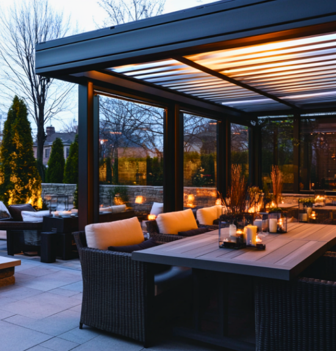
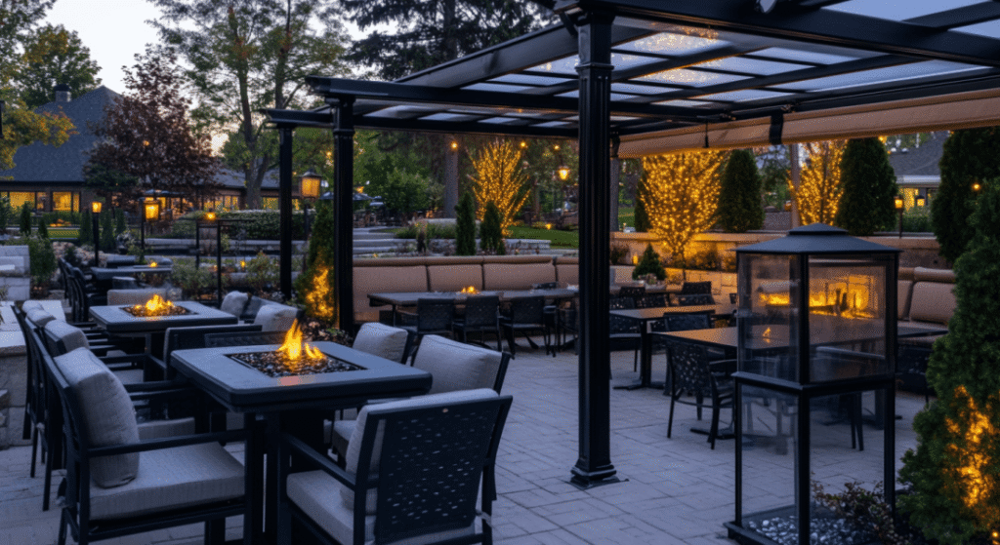
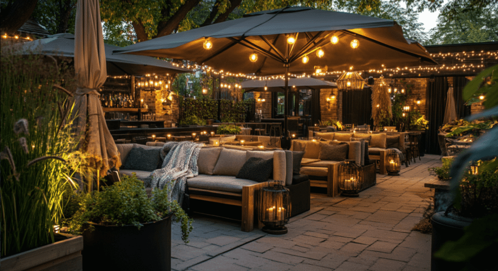
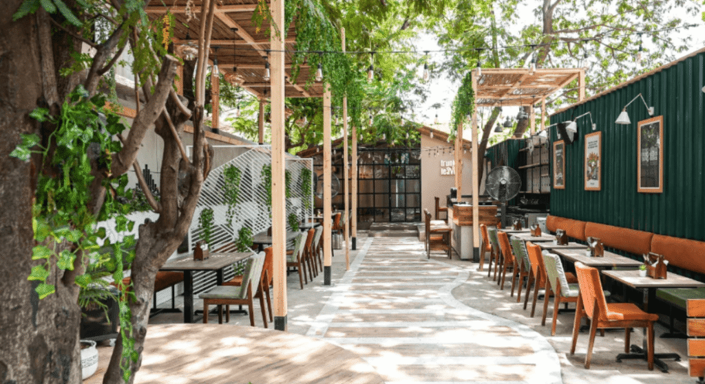
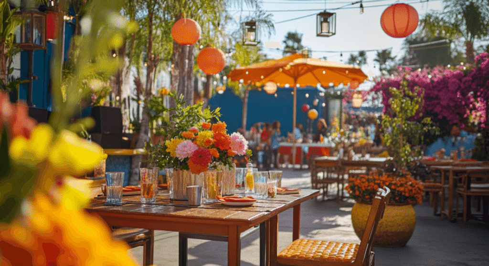
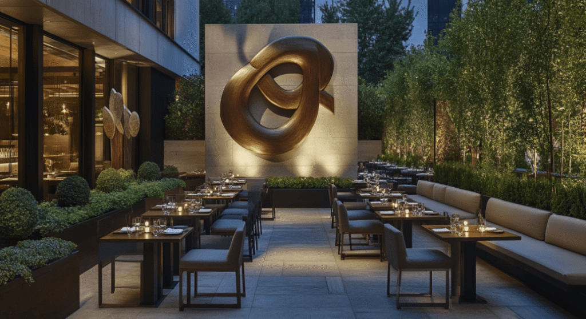

When it comes to creating memorable dining experiences, there’s one setting that consistently turns heads and fills tables: the outdoor patio. Especially as diners crave fresh air and unique settings, outdoor spaces have evolved from nice-to-haves into profit-driving essentials for restaurants. However, making outdoor dining work all year round isn’t just about adding a few tables outside; it requires intentional design, strategic ambience, and a touch of creativity. Here’s why and how your restaurant can transform its outdoor space into a bustling, all-season revenue generator making it the best outdoor seating area.
1. Why Outdoor Dining Matters More Than Ever

Outdoor dining offers a unique set of advantages that appeal to modern-day diners. Not only does it offer a refreshing change from enclosed interiors, but it also taps into a deep-rooted human desire to be close to nature. For today’s clientele—who are more discerning, experience-driven, and Instagram-happy—having an outdoor dining space is less of a novelty and more of an expectation.
Diners want ambience, fresh air, and an escape from routine. When crafted thoughtfully, your outdoor space can become the “it” spot people talk about, post on social media, and return to. Restaurants with appealing patios often see increased foot traffic and a rise in repeat customers, all while adding a premium feel that guests are willing to pay for.
2. Creating a Year-Round Outdoor Space: Key Design Elements

Turning an outdoor patio into a year-round attraction requires more than a few tables and string lights. Think of your outdoor dining area as an extension of your brand—a space that must feel just as inviting and cohesive as your interior. Here’s how to bring it to life:
a. Weather-Proof Comfort
- Heating Solutions: Embrace outdoor heaters or fire pits for colder months to keep patrons comfortable and extend patio dining well into the fall or winter.
- Shade & Rain Protection: Install retractable canopies, large umbrellas, or even pergolas with sliding panels. These ensure that rain or harsh sunlight doesn’t disrupt the dining experience, making your patio usable no matter the forecast.
- Insulated Furniture: Opt for weather-resistant, cosy furniture that won’t feel cold in winter or too hot in summer. Cushioned seats, blankets, and insulated tabletops can make the outdoor experience inviting in any weather.
b. Lighting that Sets the Mood
- Ambient Lighting: String lights, lanterns, and warm-toned fixtures can bring a welcoming glow to the patio dining, creating an inviting atmosphere for evening diners.
- Accent Lighting: Spotlights on plants, walls, or outdoor artwork add depth to the space and make it photogenic (a.k.a., Instagram-friendly).
c. Nature-Inspired Decor
- Greenery & Planters: A touch of nature goes a long way in elevating an outdoor dining experience. Large planters, green walls, or seasonal flowers can add colour and life, creating a peaceful retreat for your guests.
- Seasonal Touches: Update your decor with seasonal elements—think winter lights in December or potted herbs in summer. These small details keep the space dynamic and relevant year-round.
3. Outdoor Dining as a Unique Selling Point

For savvy restaurant owners, a well-designed outdoor space isn’t just extra seating—it’s a marketing tool. An outdoor patio creates a unique selling point that differentiates your restaurant from others, giving you a competitive edge in attracting new and returning customers. Additionally, well-designed patios are ideal for:
- Private Events and Parties: A great patio doubles as an event space for private gatherings, from birthdays to corporate dinners, allowing you to attract bookings for special occasions.
- Theme Nights and Pop-Up Events: Consider seasonal themes, live music nights, or pop-up events in your outdoor area to attract diverse audiences and create a buzz around your restaurant.
4. Marketing Your Outdoor Space for Maximum Impact

Once your patio is set up, it’s time to let the world know! Outdoor spaces lend themselves perfectly to eye-catching social media content. Here’s how you can use your outdoor area to drive engagement and increase visibility:
- Social Media Ready: Encourage diners to tag your restaurant on Instagram by creating “Instagrammable” spots and using hashtags. Beautifully designed outdoor spaces become organic marketing assets as guests snap and share their dining experience.
- Highlight Events: Regularly update your social media to showcase outdoor events or seasonal changes to the patio, reminding guests that there’s always something new to enjoy outside.
- Incentivize Repeat Visits: Promote exclusive “patio-only” menus, happy hours, or loyalty perks for diners who choose to sit outside. These incentives not only drive traffic but also create a memorable brand impression for each guest.
5. Boosting Revenue with Smart Outdoor Dining Strategies

When done right, outdoor dining can significantly boost a restaurant’s bottom line. Here’s how to maximize revenue potential:
a. Menu Adjustments
- Seasonal Menu Options: Offer refreshing drinks, salads, and lighter dishes in summer, while embracing heartier, comfort foods in winter. Seasonal menu adjustments make the outdoor experience feel more aligned with the ambience, encouraging guests to linger and enjoy their meals.
- Premium Add-Ons: Think about the small touches that enhance guest satisfaction and your revenue. Hot drinks with a twist in winter (mulled wine, anyone?) or refreshing mocktails in summer can increase average order values.
b. Creating a Lasting Impression
- Service Excellence: Outdoor dining often feels more casual, but service should remain attentive and top-notch. Train staff to handle the unique aspects of outdoor dining, from managing temperature complaints to serving in windy conditions.
- Fostering Atmosphere: Make the patio feel like an escape. Ambient music, natural elements, and comfortable seating create a vibe that feels exclusive and personal, adding an emotional connection to the dining experience.
Wrapping Up
Outdoor dining is not just an add-on, it’s a revenue-generating space that, when done thoughtfully, can enhance brand loyalty, increase guest satisfaction, and keep your tables filled all year. By creating a well-designed, welcoming patio, you’re offering more than just a meal—you’re giving guests a memorable escape they’ll want to return to, season after season.
So, if you’ve been eyeing that empty outdoor area, now is the time to transform it. Embrace the elements, set the mood, and watch as your patio becomes one of the most valuable assets of your restaurant. After all, dining under the open sky is an experience that never goes out of style.
#OutdoorDining #RestaurantDesign #HospitalityIndustry #RestaurantOwners #FBDining #PatioDining #CustomerExperience #RestaurantMarketing #SprintCoDesign